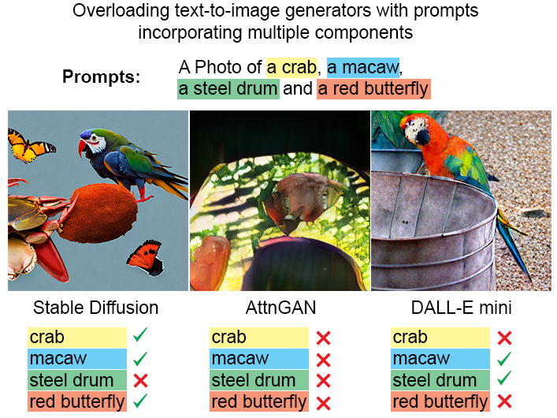
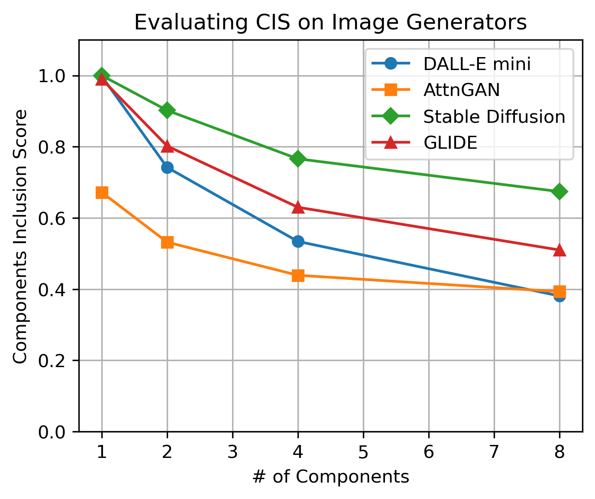
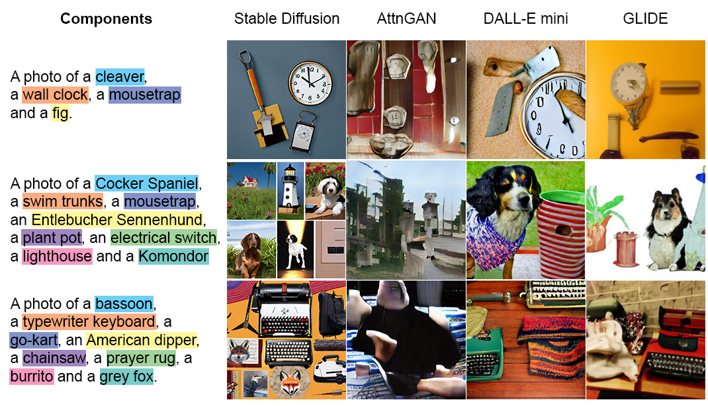

Image generators struggle when generating multi-components images
Just Some Contexts
With the rapid advancement of conditional image generation, a field where image generators creates descriptive images with input like text descriptions (Text passed into the generator as condition), we are able to create visual content tailored to our requirement.
However, image generators can face the challenge where they couldn’t generate image faithful to the text descriptions. This get worst when there are many components/objects included in the text. For example, given a prompt “A picture of a bassoon, a typewriter keyboard, a go-kart, an American dipper, a chainsaw, a prayer rug, a burrito and a grey fox”. As in 2023, a state-of-the-art open source model like stable diffussion cannot include 100% all the components in a single image [1].
Although the components are unlikely to happen together, a human would still try their best to fit everything in the image, not matter how incoherent they will be. Yet, neural network model still lack the robustness to handle such situation. So one point for human in this case. Therefore, the ability to construct a model that is faithful to its condition has become one of the metrics to evaluate their generative capability.
Problem Statement
The thing is, there isn’t an automatic way to determine if an image include all the components a part from visual inspection. We don’t want to gather a group of labours just to evaluate how well a model handle such case. Therefore, in this work, we developed a framework and a metric named Components Inclusion Score (CIS) to do the job for us.
In a nutshell, we prepare a list of prompts with K components (objects in image) in it. Then, we ask the image generator to generate a distribution of images according to the prompts. Followed by that, we use CLIP model to evaluate how well did the image generator incoporate all the components inside the images to output a CLIP Score for each image. Lastly, we use the CIS metric to calculate how well the image generator are doing across the list of prompts.
Experiment and Result
In our experiment, we overloaded image generators like Stable Diffusion V2, Dall-e mini, AttnGAN, and GLIDE with various components, evaluating their performance using the CIS metric. Results (see Fig. 1) show that with fewer components, models generally produce images closely matching the input criteria. However, as component count increases, CIS scores drop, indicating a decline in the models' ability to accurately incorporate all requested components. Also see the generated images with the corresponding prompt in Fig. 2. It is obvious that the image generators don’t understand the mission here because a human would have fit all the components in it, regardless of the quality or whatsoever (e.g., if we are given a hundred components, we will draw them as tiny as possible and place them side by side to fit them all in the image).
 Fig.1 CIS decline with increasing number of components. This means that these tested models cannot generate all the components when they are too many of them in the conditioned text.  Fig.2 Examples of image generated with the given prompt.It is also worth noting that the stable diffusion V2 is the best-performing model, by the time of writing this paper. Aside from that, we also evaluated the output images distribution with IS and FID just to check their quality and diversity. The result following the general trend shown in the plot in Fig. 1, indicating that a better model is more faithful to the prompt while maintaining its quality. Furthermore, we fine-tuned a model on MCID to see if Data Distribution Expansion with Multi-Component Images could improve CIS. While it showed improvement, it did not address the root problem.
Interestingly, after completing this paper, Dall-E 3 and Midjourney V6 were released, demonstrating impressive multi-component generation capabilities. Too bad their are closed model and cannot be tested at this stage.
 Fig.3 The prompt given to Midjourney V6: A photo of a throne, a cowboy hat, a lion, a shoe store, a tea cup, a carousel, a common gallinule and a cockroach.
Fig.3 The prompt given to Midjourney V6: A photo of a throne, a cowboy hat, a lion, a shoe store, a tea cup, a carousel, a common gallinule and a cockroach.
 Fig.4 The prompt given to Midjourney V6: A photo of a cleaver, a fig, a mousetrap and a wall clock.
Fig.4 The prompt given to Midjourney V6: A photo of a cleaver, a fig, a mousetrap and a wall clock.
Takeaway
Perhaps the most useful takeaways from this post is:
- When training an image generator conditioned on text, include complex images with multiple components to expand its training data distribution.
- Expanding training data distribution is merely a workaround; image generators need to adopt new techniques to be completely faithful to the text conditions and address the root problem.